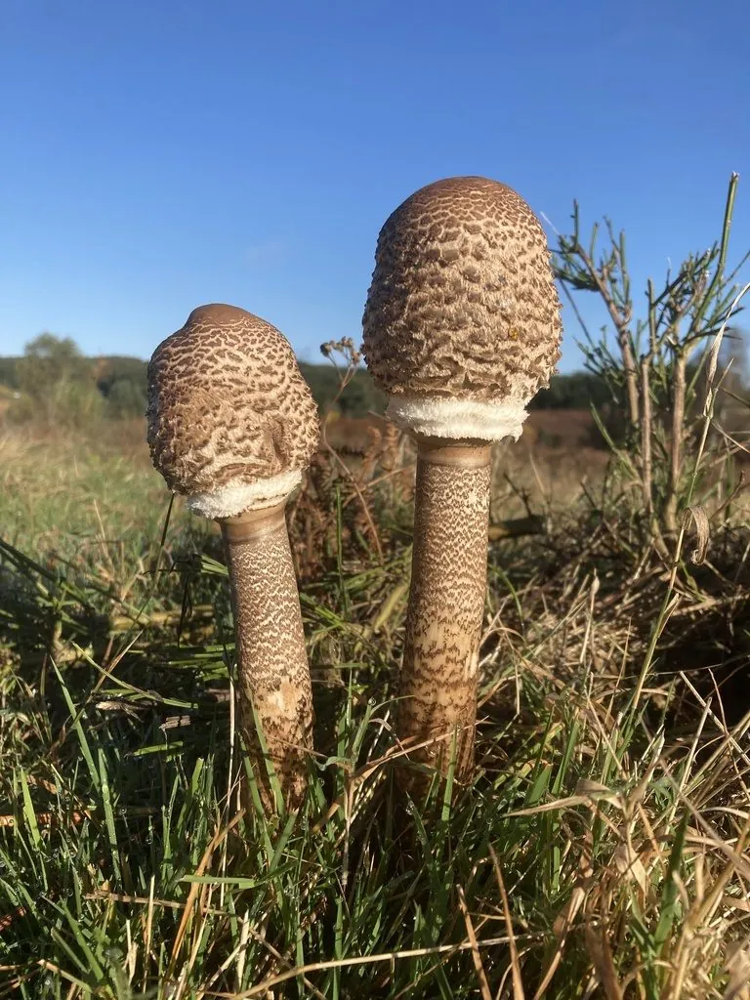

真菌 · 真菌界
大环柄菇 Macrolepiota procera

大环柄菇的菌盖展开如伞、表面有褐色鳞片，菌柄细长并带蛇皮状花纹，菌环大而可移动，是体型高大的野生食用菌。
- 分类
- 门担子菌门纲伞菌纲目伞菌目科蘑菇科属大环柄菇属
- 栖息环境
- 草地、林缘、牧场与疏林下，夏秋季出菇
- 地理分布
- 欧洲、北美与东亚，中国南北各地均有记录
- 保护级别
- 暂无评估（IUCN 未评估，中国未列入重点保护名录）
物种志
大环柄菇是担子菌门蘑菇科的大型真菌，子实体单生或群生。菌盖幼时球形，展开后呈伞状，直径 10–30 cm，中央有突起的褐色顶斑，表面底色灰白至淡褐色，覆盖着同心排列的褐色鳞片，越靠近边缘鳞片越细；菌肉白色，松软。菌褶白色至乳白色，离生、密集。菌柄细长，高 15–40 cm，直径 1–2 cm，表面有褐色与白色相间的蛇皮状环纹，基部膨大；菌环大而厚，双层，可以上下移动。孢子印白色至淡粉色。
大环柄菇生于草地、林缘、牧场和疏林下，夏秋季出菇，在欧洲、北美和东亚广泛分布，中国南北各地都有记录。它体型高大、肉质松软，是欧洲著名的野生食用菌，可切片煎食或做汤，菌柄质地较韧，通常只取菌盖。采食时必须与有毒的大青褶伞区分：后者菌褶成熟后变绿、孢子印绿色，误食会引起严重胃肠炎。大环柄菇的菌环能上下移动，是辨识它的有趣特征。
形态与习性
- 菌盖展开后直径 10–30 cm，有褐色鳞片
- 菌褶白色至乳白色，离生密集
- 菌柄高 15–40 cm，有蛇皮状环纹
- 菌环大而厚，可上下移动
- 孢子印白色至淡粉色
- 食用性可食，菌柄较韧
- 易混种大青褶伞菌褶变绿、孢子印绿色，有毒
趣味知识
- 大环柄菇的菌环可以上下移动，像套在菌柄上的小环。
- 菌柄上有褐白相间的蛇皮状花纹，是它的识别特征之一。
- 菌盖展开后直径可达 30 cm，像一把撑开的小伞。
- 有毒的大青褶伞外形相似，但菌褶和孢子印会变绿。